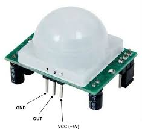
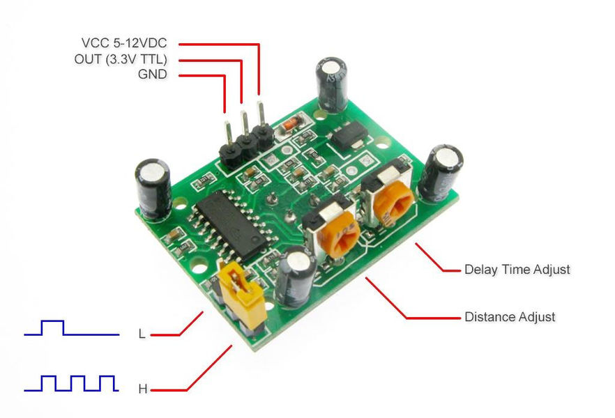
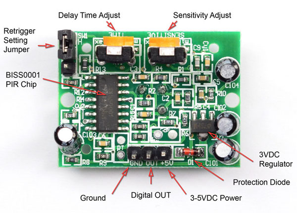

Detecció de moviments amb infrarroigs
El sensor que es veu a la imatge inferior és un HC-SR501, es tracta d’un sensor infrarroig passiu (PIR), i serveix per a detectar moviments. Resulta habitual trobarlos als lavabos públics per encendre la llum quan detecta la presencia de persones.



Si vols saber més de com funcionen els PIR pots consultar aquesta pàgina.
A continuació tenim un exemple de codi que permet detectar el moviment:
import RPi.GPIO as GPIO
import time
GPIO.setmode(GPIO.BOARD)
GPIO.setup(12, GPIO.IN)
try:
while True:
input_state = GPIO.input(12)
if input_state == True:
print('Moviment detectat')
time.sleep(1)
except KeyboardInterrupt:
print("Ctrl + C, Quit")
finally:
GPIO.cleanup()
Pots intentar millorar el codi fent servir interrupcions.